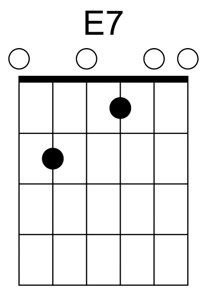
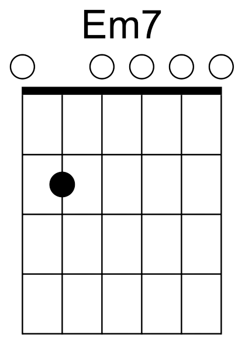

This week we'll continue our theme of pop music. We're going to cover a handful of songs from the 1990s to the present. These decades include a smattering of Britpop, grunge, pop-punk, R&B, hip-hop and rap. Let's try a couple of recognisable songs from each decade. Older guitarists may remember these from listening to the radio commuting to/from work. Younger guitarists may have fond childhood/teenage memories of the songs below.
Let's look at major and minor seventh chords in more detail. These are relatively common chords outside the
standard major and minor chords found in songs. Look at the chord diagram of an E7 chord. Now make this same
chord shape with your middle and ring fingers. Like before you need to place your index finger flat against
the fretboard to play the right chord. Move up and down, playing various major seventh chords to get used to
the feeling and sound of the chord.

Now we'll move onto a minor seventh chord. Place your fingers in the shape of an Em chord. Now form this shape
with your ring and pinky fingers. Remove the pinky finger and strum. This is an Em7. Now that you have a minor
seventh shape formed, use your index finger to form the bar against the preferred fret. There should be a gap
of one fret between the index and ring finger. See the list below for more details. Example: Bm7 means you hold
down seventh fret with your index finger and your ring finger on the ninth fret.

Oasis - Cigarettes And Alcohol
Blur - Coffee & TV
Britney Spears - Oops I Did It Again
Blink-182 - Adam's Song
Mark Ronson - Uptown Funk
Adele - Hello
The Weeknd - Blinding Lights
The Kid Laroi ft Justin Bieber - Stay